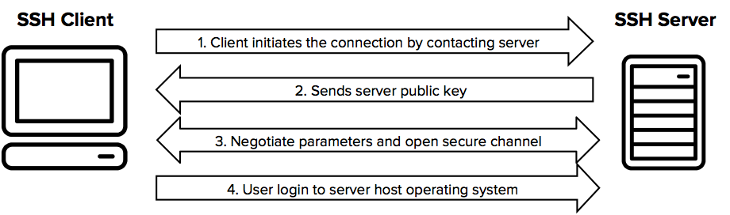

What is the SSH Protocol?
Created in 1995 by Tatu Ylönen, SSH protocol, known also as Secure Shell or Secure Socket Shell, is a network protocol that gives system administrators a secure way to access remote assets over an unsecured network. SSH provides password or public-key based authentication and encrypts connections between two network endpoints. It is a secure alternative to legacy login protocols (such as telnet, rlogin) and insecure file transfer methods (such as FTP). In addition to providing strong encryption, SSH is widely used by network administrators to manage systems and applications remotely, deliver software patches,or execute commands and move files.
How SSH Protocol works ?
To establish a connection between an SSH client and server, the client initiates the setup process and verifies the identity of the SSH server using public key cryptography. Once this verification is complete, the SSH protocol utilizes robust symmetric encryption and hashing algorithms to safeguard the confidentiality and authenticity of the data shared between the client and server.
- Client initiates connection to SSH server.
- The server sends its public key to the client.
- The server’s public key is saved in the client’s known hosts file.
- The client and the server negotiate the connection parameters and establish connection.

When a client connects to a server, they go through a process to establish a secure connection. As part of this process, they agree on a specific symmetric encryption algorithm, such as AES , to use for their communication and generate a key for encrypting and decrypting their data. To further enhance the security of the communication, the SSH protocol also utilizes strong hashing algorithms like SHA-2 to ensure the integrity of the transmitted data.
Common Use Cases for SSH Protocol
SSH connections have mostly been used to secure different types of communications between a local machine and a remote host, including:
- Secure remote access to resources
- Remote execution of commands
- Delivery of software patches and updates
- Interactive and automated file transfers
Disadvantages of SSH
While SSH (Secure Shell) is generally considered a secure and reliable protocol for remote access and file transfer, there are a few potential disadvantages to keep in mind:
- Complexity: SSH can be complex to configure and use, especially for novice users. The command-line interface may also be intimidating to some users.
- Firewall and NAT traversal: SSH can be problematic to use when traversing firewalls and Network Address Translation (NAT) devices, which can cause connection issues and require additional configuration.
- Limited file transfer options: While SSH includes some file transfer functionality (such as SCP and SFTP), it may not be as feature-rich or convenient as dedicated file transfer protocols such as FTP or HTTP.
- Limited support for remote access: SSH may not be the best choice for remote access to graphical user interfaces (GUIs) or other interactive applications, as it is primarily designed for command-line access.
- Overhead: SSH uses encryption algorithms to protect data during transmission, which adds additional data to the original data in order to make it unreadable to anyone who intercepts it. SSH can have a higher overhead than other protocols, which can impact performance in certain situations.
Alternatives
- Telnet: Telnet is a simple text-based protocol that allows remote access to command-line interfaces of remote systems. However, it lacks encryption and is considered less secure compared to SSH, as the data is transmitted in clear text, making it vulnerable to interception and eavesdropping.
- RDP (Remote Desktop Protocol): RDP is a proprietary protocol developed by Microsoft that provides remote access to graphical user interfaces (GUIs) of Windows-based systems. RDP allows for remote control and visualization of the desktop environment, which can be useful for tasks that require interaction with GUI-based applications.
- VNC (Virtual Network Computing): VNC is an open standard protocol that allows remote access to graphical desktop environments. VNC uses a client-server architecture and provides remote control and visualization of the desktop environment, similar to RDP, but it is platform-independent and can be used to access systems running various operating systems.
- FTP (File Transfer Protocol): FTP is a widely used protocol for transferring files over the internet. It provides a simple and straightforward way to transfer files between remote systems, but it lacks the encryption and security features of SSH, making it less secure for transferring sensitive data.
- Web-based interfaces: Some systems provide web-based interfaces for remote access and file transfer, which can be accessed through a web browser. These interfaces may use HTTPS for encryption and authentication, providing a secure way to access remote systems through a web interface.